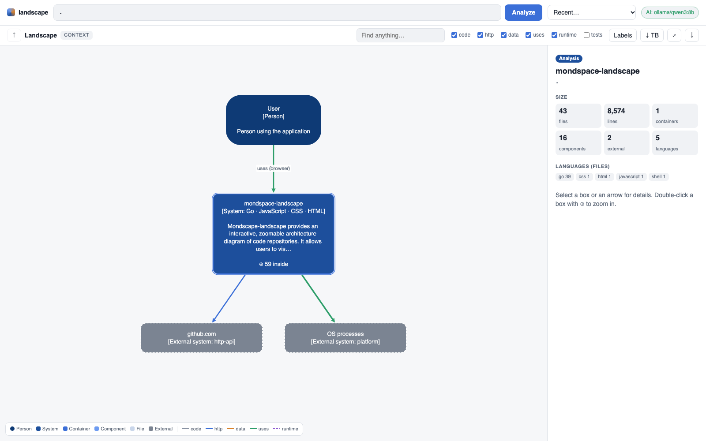
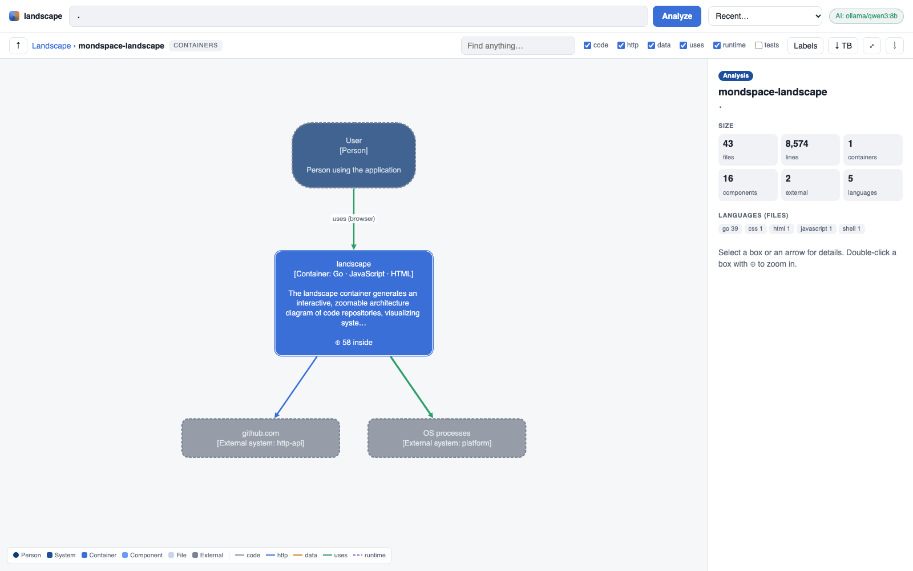
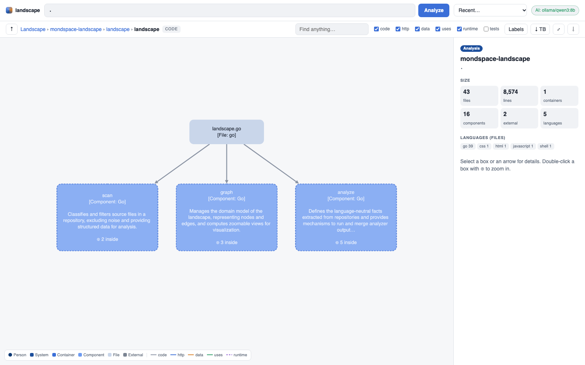

Why
Generated from code
Always current. No modelling language to keep in sync with reality.
Layered & zoomable
Context, containers, components, code. Relationships are lifted to the level you are looking at.
Explained in plain language
Ollama or LM Studio describe every part, bottom-up, while you explore.
One small binary
Go, no accounts, no cloud, no telemetry. Run it in a repo, on a path, or paste a GitHub URL.
Zoom from the big picture to a single file



Use it
landscape # analyze the current directory and open the diagram landscape ~/code/my-service # a local repository landscape github.com/charmbracelet/glow # a public GitHub repository landscape serve # open the UI and paste repositories there landscape --json . > landscape.json # the model as JSON
It finds HTTP flows (UI calls matched to the routes that serve them), data flows with table names, external APIs, cloud services, deployment (Docker, compose, fly.io) and the people using it — for Go, JavaScript/TypeScript, Python, Swift and HTML templates. See the README for details.